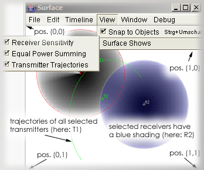

The surface is a 2D display showing the situation at one moment in time. It serves as an edit window for receivers and transmitter trajectories. Receivers are shown by a red crosshair labelled with their names. The crosshair corresponds to their central anchor point. A dashed red outline indicates the receiver's dimension. Depending on to the settings in the View menu, the receiver's sensitivities are plotted as a grayscale image, where overlapping receivers are added either linearily or according to an equal power rule.
Transmitters are likewise shown by a green crosshair labelled with their names. The crosshair corresponds to the current location of the transmitter and is animated when the timeline position changes, either by dragging in the timeline axis or by pressing the transport's play button. Depending on the settings of the View menu, the trajectories of all currently selected transmitters between the beginning and ending of the current timeline selection are displayed as green dashed polylines.
Receivers can be edited using the pointer tool. Transmitters can be edited using the line tool, the curve tool, the arc tool or the pencil tool.
All coordinates regarding the surface are normalized such that the top left corner corresponds to the X,Y coordinates (0,0), the top right corner is (1,0), the bottom right corner is (1,1) and the left bottom corner is (0,1). The display is automatically zoomed when the window is resized. Rulers are shown optionally depending on the setting of the menu item View->Surface shows->Rulers.